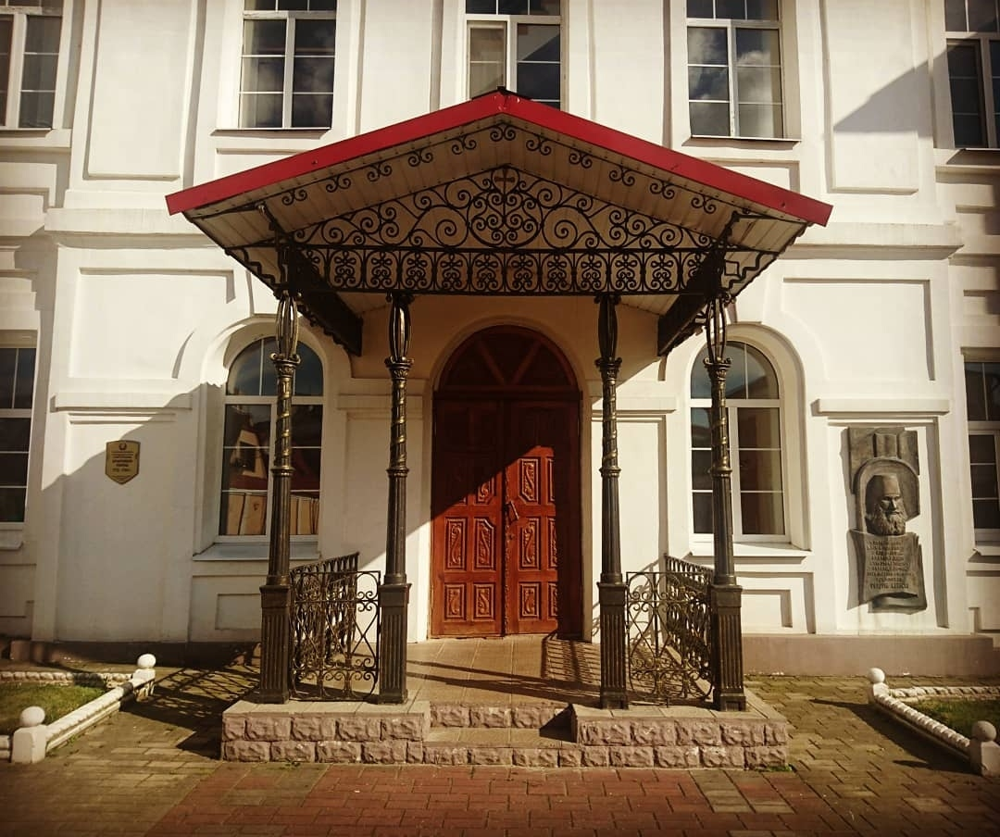
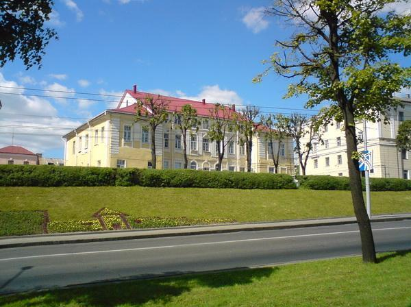
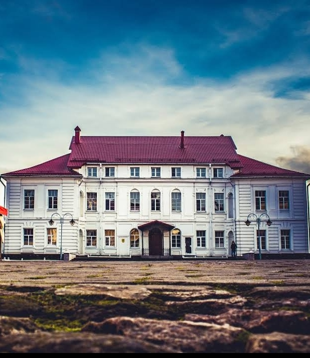

Дворец Георгия Конисского (Архиерейский дворец) — памятник архитектуры позднего барокко в Могилёве. Возведён в 1772—1785 гг. для православного архиепископа Могилёвского, Мстиславского и Оршанского Георгия Конисского, архитектором И.К. Глаубиц. Входит в Государственный список историко-культурных ценностей Республики Беларусь. Являлся резиденцией Георгия Конисского в 1785—1795 гг., с 1797 г. — А. Братановского. В 1918 г. здание занимала Могилёвская губернская чрезвычайная комиссия. В советский период оно использовалось как жилой дом. Центральное место в интерьере дворца занимал вестибюль с трёхмаршевой лестницей. На первом этаже находился парадный зал для приемов и служебные комнаты, на втором — личные покои архиепископа: спальня, кабинет, библиотека, на третьем — хозяйственные помещения. В XX веке внутренняя планировка была изменена. В настоящее время здание дворца принадлежит Могилёвской епархии Белорусской православной церкви.
Адрес: Могилев, улица Архиерейский Вал Конисского, 1.
Адрес: Могилев, улица Архиерейский Вал Конисского, 1.